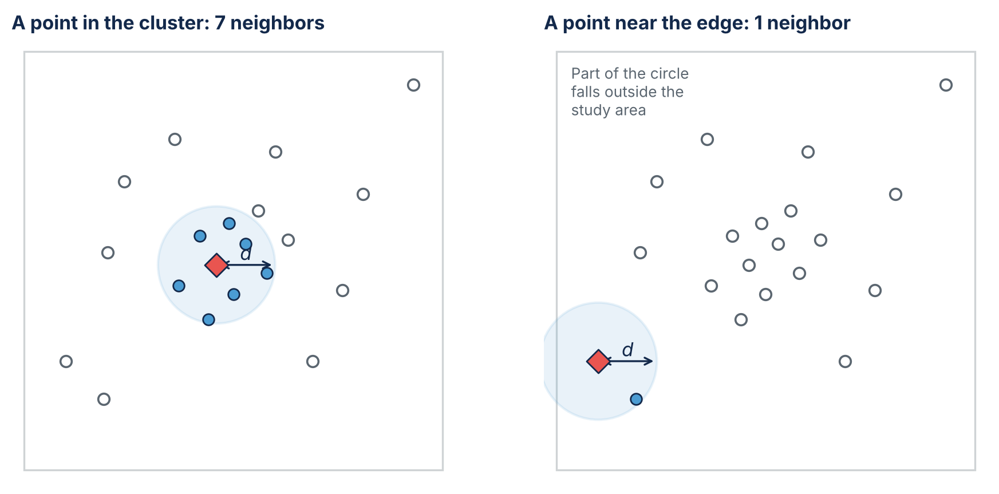
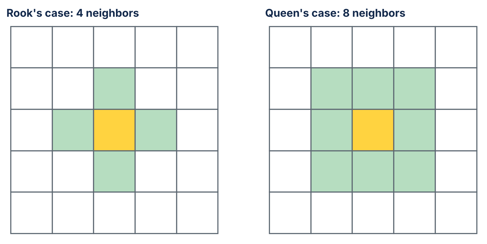
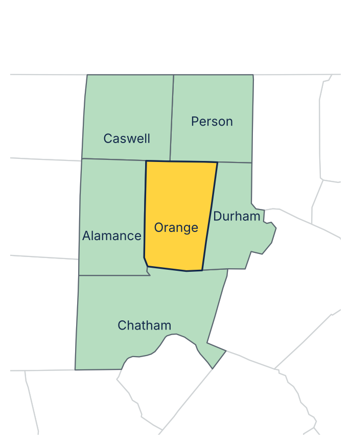
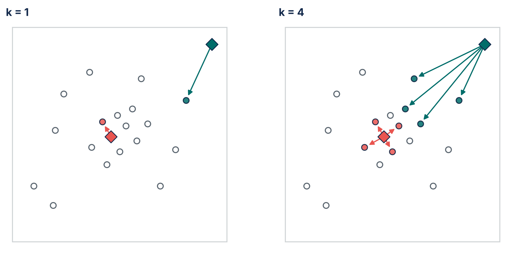
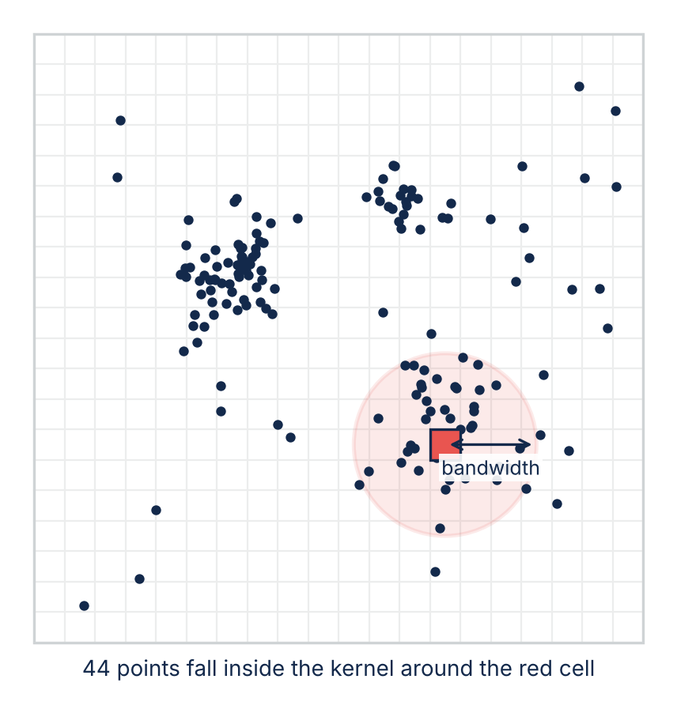
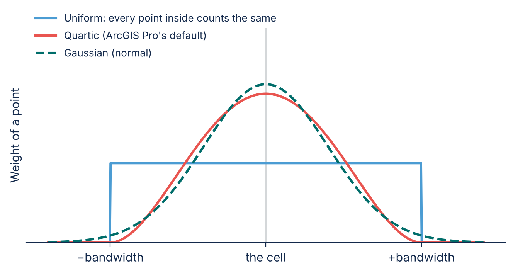
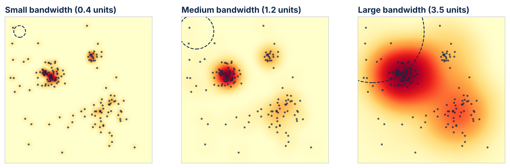

12 Density and Neighborhoods
By the end of this chapter you should be able to:
- Calculate a density as a count divided by an area, and explain why the choice of area changes the answer.
- State Tobler’s first law of geography, and explain how it relates to spatial autocorrelation.
- Define neighborhoods by distance, by contiguity (rook’s and queen’s case), and by number of nearest neighbors, and name the strengths and pitfalls of each.
- Explain how kernel density estimation turns points into a continuous density surface.
- Describe how bandwidth, kernel shape, and cell size change a density surface.
- Run kernel density in ArcGIS Pro and QGIS, and interpret the result.
Chapter 11 mapped the population density of North Carolina’s counties. The counties were ready-made areas to divide by. But much of the data we care about arrives as points with no area around them: crimes, trees, cases of a disease, car crashes, or 911 calls. Where are they concentrated? To answer that, we need an area to divide by, and when no area exists, we have to define one. This chapter is about how to do that: with neighborhoods, and with kernel density estimation, which turns a set of points into a smooth surface of density.
12.1 Density: things per area
Density is a count divided by an area. Population density is the number of people divided by the area they live in. North Carolina had 10,439,388 people in the 2020 Census, so:
\[ \text{density} = \frac{10{,}439{,}388 \text{ people}}{53{,}819 \text{ mi}^2} \approx 194 \text{ people per mi}^2 \]
But 53,819 square miles is North Carolina’s total area, including its sounds, lakes, and rivers. The Census Bureau divides by land area alone, 48,618 square miles, which gives 214.7 people per square mile. Same people, same state, different answer.
This is the theme of the chapter: the area you divide by changes the density. For a state, the choice is between total and land area. For points, there is no area at all until we define one, and every choice of area gives a different result.
Think of a place you know well in Chapel Hill. Where would you expect the most people, crimes, or trees per square mile? What area would you divide by to measure it?
12.2 Neighborhoods
12.2.1 What is a neighborhood?
Ask people to describe their neighborhood, and you get three kinds of answer:
- A distance: “everything within a 10-minute walk.”
- Shared borders: “my street, and the streets that touch it.”
- The nearest neighbors: “the four houses around mine.”
In spatial analysis, a neighborhood is a zone of analysis drawn around a location, and those are the three ways to draw it: by distance, by contiguity, or by a number of neighbors. We need neighborhoods because many things we map show neighborhood effects. A house’s price tracks the prices of the houses around it; dense blocks sit next to dense blocks; species cluster in suitable habitat; and a disease spreads to nearby people first.
12.2.2 Tobler’s first law
Why are nearby places alike? Waldo Tobler put it in one sentence in 1970:
“Everything is related to everything else, but near things are more related than distant things.” (Tobler 1970)
This is Tobler’s first law of geography. Its measurable version is spatial autocorrelation: values at nearby locations are more similar (positive spatial autocorrelation) or more different (negative spatial autocorrelation) than chance would predict. Most geographic data show positive spatial autocorrelation, which is what makes maps useful: if nearby places were no more alike than distant ones, a map would look like random noise.
The law leaves open what counts as near. A neighborhood definition is how we decide, so the rest of this section is about making that choice explicit. None of the three definitions is correct in general. The right one depends on the process you are studying: walking distance for access to a grocery store, shared borders for a policy that spills over from one county to the next.
12.2.3 By distance
A distance-based neighborhood includes every location within a set radius, \(d\), of the location in question (Figure 12.1). In the simplest, binary version, each pair of locations gets a weight of 1 if they are neighbors and 0 if they are not. Repeating this for every location builds a table of who neighbors whom, often stored as a spatial weights matrix.

Because the cutoff is a fixed distance, the data must be in a projected coordinate system (Chapter 4), so that \(d\) is in meters or feet, not degrees.
Distance neighborhoods have two weaknesses:
- Isolated locations may have no neighbors at all. A point in an empty corner of the map gets nothing within \(d\).
- The edge effect. A point near the edge of the study area has part of its circle outside the data, so it finds fewer neighbors than it should (Figure 12.1, right). Its true neighbors exist, but we never observed them. Boundary locations look less dense than they are. The fix is to collect data in a buffer beyond the study area, or to apply an edge correction.
12.2.4 By contiguity
For polygons, such as counties or census tracts, we can define neighbors by contiguity: polygons that touch are neighbors. No distance is needed: shared borders define the neighborhood. Contiguity is a relative, topological measure of nearness. Two counties are neighbors because they touch, not because their centers are within some distance.
There are two ways for polygons to touch, named for chess pieces (Figure 12.2):
- In rook’s case contiguity, neighbors share an edge. The rook moves only in straight lines.
- In queen’s case contiguity, neighbors share an edge or a corner. The queen moves straight or diagonally. Queen’s case always finds the same or more neighbors than rook’s case. It is the default in many tools, such as GeoDa.

The neighbors that touch a polygon directly are its first-order neighbors. The neighbors of those neighbors are second-order neighbors, and so on. On real maps, few polygons meet only at a corner, so rook’s and queen’s case often agree. Orange County has the same five first-order neighbors either way (Figure 12.3). The famous exception is the Four Corners, where Arizona and Colorado, and Utah and New Mexico, touch only at a point.

Contiguity works only for polygons, and it struggles with odd shapes and islands: an island, or a county split by water, may touch fewer neighbors than it is really connected to by bridges and ferries, or none at all.
12.2.5 By number of neighbors
A k-nearest-neighbor neighborhood fixes the number of neighbors, \(k\), instead of the distance. Each location reaches out until it has found its \(k\) closest locations (Figure 12.4). Distance doesn’t matter, only rank: the nearest wins.

This is both the strength and the weakness of the method. Every location gets exactly \(k\) neighbors, however sparse its surroundings, so no point is left out. But an isolated point’s neighbors may be far away, and not really related to it. With distance neighborhoods, the size of the neighborhood is fixed and the number of neighbors varies; with \(k\) nearest neighbors, the number is fixed and the size varies with the density of points. Larger \(k\) smooths the results but blurs local detail.
| Definition | Neighbors are | Works best for | Watch out for |
|---|---|---|---|
| Distance | All locations within radius d | Points; density estimation | Edge effects; isolated points get none |
| Contiguity | Polygons sharing an edge (rook) or an edge or corner (queen) | Polygons such as counties | Odd shapes and islands |
| k nearest | The k closest locations | Uneven or sparse points | Neighbors may be far away |
You are studying whether a county’s opioid overdose rate is related to the rates in the counties around it. Which neighborhood definition would you use? What about studying whether a coffee shop’s sales depend on the other coffee shops nearby?
12.3 Kernel density estimation
12.3.1 From points to a surface
Density estimation almost always uses distance neighborhoods, because density is a quantity per unit of area. Kernel density estimation (KDE) goes one step further: it lets nearer points count more than farther ones, and it produces a continuous surface, a raster, rather than one value per point.
Picture a grid of cells laid over the study area (Figure 12.5). A kernel, a window with a set radius called the bandwidth or search radius, is centered on each cell in turn. At each cell, the tool:
- finds the points that fall inside the kernel;
- gives each one a weight, from the kernel’s shape: more for nearby points, less for distant ones;
- adds up the weights and divides by the kernel’s area;
- writes the result to that cell of the output raster.

The result is a smooth surface whose value in each cell is the density of points around it, in points per square mile or per square kilometer. Maps of such surfaces are often called heat maps.
The idea was developed in statistics in the 1950s and 1960s, to estimate the shape of a distribution from a sample without assuming it was normal (Silverman 1986). Geographers applied the same idea in two dimensions.
12.3.2 Kernel shape
The kernel’s shape decides how much weight each point gets (Figure 12.6):
- A uniform kernel gives every point inside the bandwidth the same weight, like a cookie cutter. It is the simplest, and gives the same result as counting points in a circle.
- A quartic kernel gives the most weight to points at the center and less and less toward the edge, reaching zero at the bandwidth. It is the default in ArcGIS Pro and QGIS.
- A Gaussian (normal) kernel is bell-shaped, and in theory never quite reaches zero.

The shape of the kernel changes the result far less than its size does (Silverman 1986).
12.3.3 Bandwidth
Bandwidth is the most important choice in kernel density estimation (Figure 12.7):
- A small bandwidth lets each point influence only a short distance. It shows local hot spots, but if it is too small, it produces a spiky surface of isolated peaks, one for each point.
- A large bandwidth spreads each point’s influence widely. It shows the broad regional pattern, but if it is too large, it produces one smooth blob that hides the hot spots.

A good bandwidth matches the scale of the process you are studying: a few blocks for street crime, several miles for wildfire ignitions. Try several, and report which you used.
12.3.4 Cell size and units
The cell size of the output raster controls how fine the surface looks, but not the pattern. Smaller cells give a smoother-looking surface and a larger file. Because the cell size and the search radius are both distances, project your data first. If the data are in a geographic coordinate system, both are measured in degrees, whose length changes with latitude (Chapter 3).
12.4 Kernel density in a GIS
12.4.1 ArcGIS Pro
The Kernel Density tool (Spatial Analyst toolbox, Density toolset) needs a Spatial Analyst license.
- Project your data to a projected coordinate system, such as NC State Plane (EPSG:32119).
- Open Kernel Density, and set the Input point or polyline features. (It takes points or lines, not polygons.)
- Population field (optional): a field that makes one feature count more than once, for example a point that stands for an apartment building with 12 units. Use NONE to count each feature once.
- Output cell size: the size of each raster cell, in map units.
- Search radius: the bandwidth, in map units. If you leave it blank, the tool estimates one from the spread of the points, with a version of Silverman’s rule of thumb.
- Area units: the units of the output, such as square miles.
- Run the tool, and symbolize the output raster with a color ramp. Compare a few search radii before you choose one.
ArcGIS Pro’s Point Density tool is the simpler, uniform-kernel version: it counts the points in a neighborhood (a circle, rectangle, ring, or wedge) around each cell and divides by its area.
12.4.2 QGIS
The Heatmap (Kernel Density Estimation) tool is in the Processing Toolbox, under Interpolation.
- Project the points, as above.
- Set the Point layer and the Radius (the bandwidth), in map units.
- Set the Output raster size (pixel size).
- Optionally, choose a Weight from field, and a Kernel shape (quartic is the default; the others are triangular, uniform, triweight, and Epanechnikov).
- Run the tool, and symbolize the output with Singleband pseudocolor.
For a quick look, without creating a new raster, set the layer’s symbology to the Heatmap renderer, which draws a kernel density surface on the fly.
12.5 Check your understanding
North Carolina had 10,439,388 people and 48,618 square miles of land in 2020. What was its population density, in people per square mile? (one decimal)
“Near things are more related than distant things” is:
Polygons that share only a corner are neighbors in:
How many neighbors does a cell in the middle of a grid have in queen’s case?
Which neighborhood definition guarantees every location the same number of neighbors?
Points near the boundary of a study area find fewer neighbors than they should. This is the:
Which choice changes a kernel density surface the most?
ArcGIS Pro’s Kernel Density tool can take polygons as input.
12.6 Summary
- Density is a count divided by an area. The area you divide by, such as total or land area, changes the answer.
- Tobler’s first law says near things are more related than distant things. Spatial autocorrelation measures how much nearby values are alike.
- A neighborhood is a zone of analysis around a location, defined by distance (everything within d), contiguity (polygons that touch, in rook’s or queen’s case), or number of neighbors (the k nearest). Match the definition to the process you are studying.
- Distance neighborhoods suffer from the edge effect and leave isolated points without neighbors; contiguity struggles with islands and odd shapes; k nearest neighbors may reach far away.
- Kernel density estimation slides a kernel across a grid, weights the points inside by their distance, and divides by the kernel’s area, producing a continuous density surface.
- Bandwidth matters far more than kernel shape: small bandwidths show local hot spots, large ones the regional pattern. Project your data so that cell size and bandwidth are in meters or feet.
12.7 Exercises
- Which area? Look up the population, total area, and land area of Dare County and of Orange County, North Carolina. Compute the density of each with both areas. Why is the difference so much larger for Dare County?
- Neighbors by hand. Draw a 4 by 4 grid of cells. How many rook’s case neighbors does a corner cell have? An edge cell? An interior cell? Repeat for queen’s case.
- County neighbors. In QGIS or ArcGIS Pro, select the counties that touch Wake County with Select by Location (touching the boundary of, Chapter 7). How many first-order neighbors does it have? Which are its second-order neighbors?
- Kernel density. Download a set of points for Chapel Hill or another town, such as crime incidents or traffic crashes from the town’s open data portal. Project them, and make kernel density surfaces with three search radii: 250, 750, and 2,000 feet. Describe how the hot spots change.
- Kernels and counts. Run ArcGIS Pro’s Point Density tool and its Kernel Density tool on the same points with the same radius. Where do the two surfaces differ most, and why?
- Hot spots and fairness. Read about the debate over predictive policing. Write a paragraph on how a hot-spot map could reinforce existing patterns of policing, and what you would check before using one.
12.8 Further reading and online resources
12.8.1 Books and articles
- Tobler, “A Computer Movie Simulating Urban Growth in the Detroit Region” (Tobler 1970), the source of the first law.
- Silverman, Density Estimation for Statistics and Data Analysis (Silverman 1986), the classic text on kernel density estimation.
- Geographic Information Analysis, by David O’Sullivan and David Unwin (O’Sullivan and Unwin 2010), on point patterns, neighborhoods, and density.
- GIS Fundamentals: A First Text on Geographic Information Systems, by Paul Bolstad (Bolstad 2022), on neighborhood operations and density.
- Intro to GIS and Spatial Analysis, by Manuel Gimond, free online, with chapters on point pattern analysis and spatial autocorrelation: https://mgimond.github.io/Spatial/.
12.8.2 Online resources
- Esri, “How Kernel Density works”: https://pro.arcgis.com/en/pro-app/latest/tool-reference/spatial-analyst/how-kernel-density-works.htm.
- Esri, “Kernel Density” tool reference: https://pro.arcgis.com/en/pro-app/latest/tool-reference/spatial-analyst/kernel-density.htm.
- Esri, “Point Density” tool reference: https://pro.arcgis.com/en/pro-app/latest/tool-reference/spatial-analyst/point-density.htm.
- QGIS User Guide, “Heatmap (Kernel Density Estimation)”: https://docs.qgis.org/latest/en/docs/user_manual/processing_algs/qgis/interpolation.html.
- QGIS Tutorials, “Creating Heatmaps”: https://www.qgistutorials.com/en/docs/3/creating_heatmaps.html.
- GeoDa, free software for exploring spatial data, neighborhoods (spatial weights), and spatial autocorrelation: https://geodacenter.github.io.
- GeoDa workbook, “Contiguity-Based Spatial Weights”: https://geodacenter.github.io/workbook/4a_contig_weights/lab4a.html.
- The GIS&T Body of Knowledge, “Kernels and Density Estimation,” “Spatial Autocorrelation,” and “Neighborhoods”: https://www.ucgis.org/site/gis-t-body-of-knowledge.
- Town of Chapel Hill open data portal, with police incident data: https://opendata.townofchapelhill.org.
- Penn State, GEOG 586: Geographic Information Analysis, on point pattern analysis and density: https://courses.ems.psu.edu/geog586/.